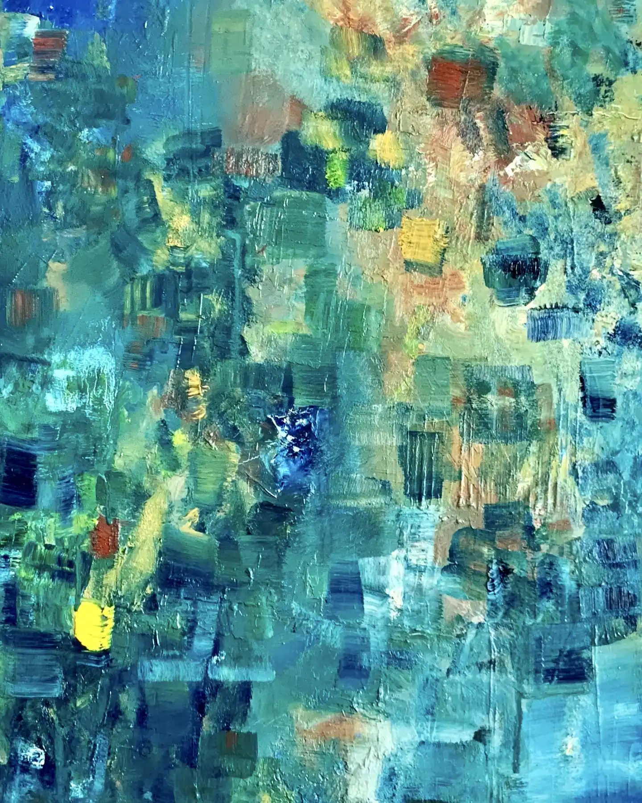
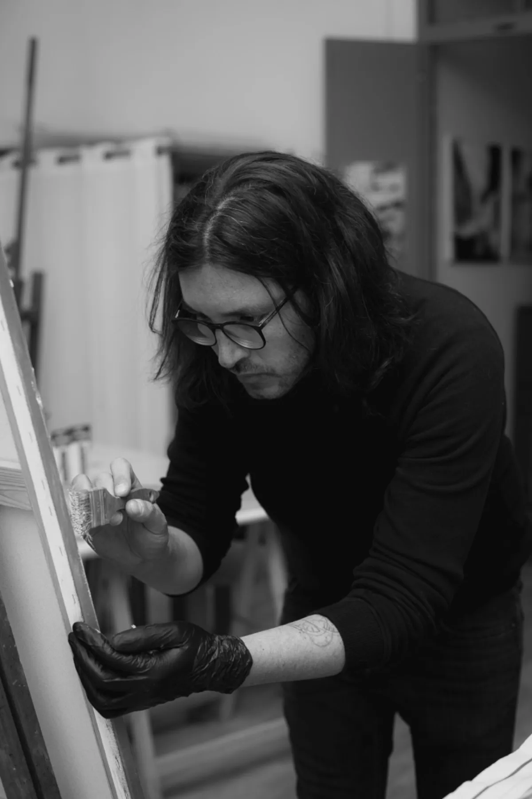

Peintre depuis dix ans. L'huile pour la matière, l'encre de Chine pour la figure — et depuis deux ans, des architectures digitales. Le fil est le même.

Né au Chili, j'ai grandi en Valais. Je peins depuis une dizaine d'années. L'huile d'abord — la matière, le geste, l'abstraction. Puis l'encre de Chine, et avec elle la figure : un trait plus nu, plus direct.
Ce qui me tient, c'est créer. Depuis deux ans, ce besoin passe aussi par le digital : des applications, des sites, de vraies architectures — chez OSOM, l'agence que j'ai fondée à Bramois. De la toile au code, le geste est le même : partir de rien, construire quelque chose qui tient.
Atelier — Bramois, Valais.
Intéressé par une œuvre, une collaboration, ou simplement envie de discuter peinture et pixels ?
camrivera@protonmail.com